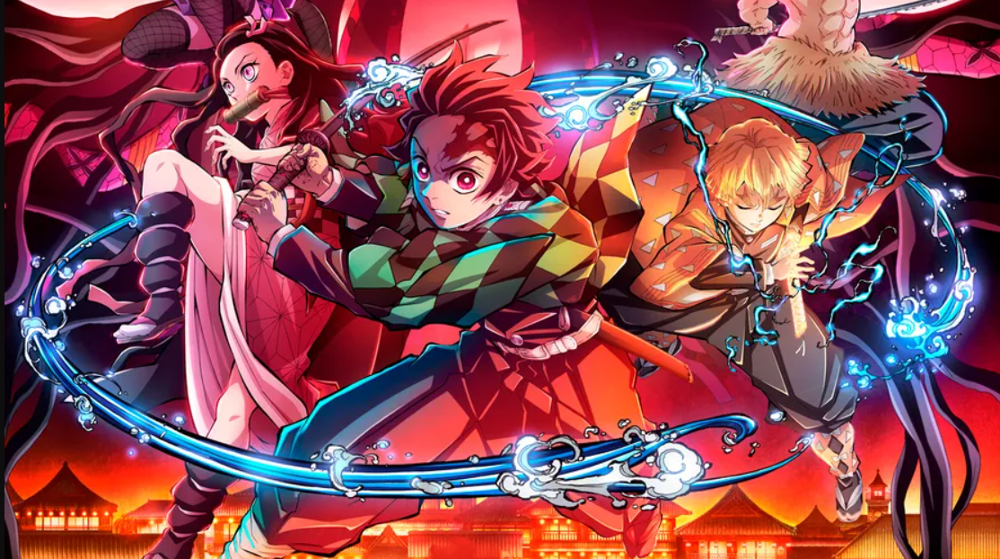

A grandeza das artes! Top 3 das Melhores Artes de Espada
Testemunhe a grandeza das artes de espada em "Kimetsu no Yaiba" com nosso ranking das três técnicas mais impressionantes e visualmente deslumbrantes da série. Desde a fluidez da Dança do Deus do Fogo, Kagura, até a brutalidade da Respiração do Vento, cada arte de espada é uma obra-prima de habilidade e destreza. Explore como essas técnicas são utilizadas em combate e como elas moldam as batalhas contra os demônios!
Dança do Deus do Fogo, Kagura
Execução: A Dança do Deus do Fogo, Kagura, é uma técnica de espada usada por Tanjiro Kamado, inspirada no estilo de respiração da Dança do Fogo. Tanjiro executa movimentos fluidos e graciosos enquanto brande sua espada, criando uma sequência de ataques incrivelmente rápidos e precisos. Propósito: Esta técnica é usada principalmente para cortar demônios com eficiência e rapidez, aproveitando a velocidade e a agilidade de Tanjiro para superar as defesas de seus oponentes. Situações de Uso:A Dança do Deus do Fogo, Kagura, é frequentemente utilizada durante confrontos contra demônios poderosos, permitindo que Tanjiro ataque e se mova rapidamente, enquanto busca brechas nas defesas de seus adversários.
Estilo da Água: Superfície Cortante, Quarta Forma - Onda Rugidora Turbulenta
Execução: Esta técnica é parte do estilo da Água, uma das respirações mais poderosas, usada por Giyu Tomioka. Ao executar a Quarta Forma, Giyu canaliza sua respiração através de sua lâmina para criar uma lâmina de água afiada que corta tudo em seu caminho.Propósito: A Onda Rugidora Turbulenta é uma técnica ofensiva que visa cortar demônios com poder e precisão, aproveitando a natureza fluida e versátil da água como uma arma letal. Situações de Uso:Giyu usa esta técnica em batalhas contra demônios de alto nível, onde precisa de uma ofensiva poderosa para penetrar nas defesas de seus oponentes e infligir danos significativos.
Estilo do Trovão: Primeira Forma - Relâmpago Seis Dobras
Execução: Relâmpago Seis Dobras é uma técnica do Estilo do Trovão, usado por Zenitsu Agatsuma. Quando ativada, Zenitsu move sua espada em um padrão complexo e rápido, criando múltiplos cortes que se assemelham a relâmpagos.Propósito: Essa técnica é extremamente rápida e eficaz, permitindo que Zenitsu desfira uma série de ataques em um curto espaço de tempo, superando seus oponentes com velocidade e precisão. Situações de Uso: Zenitsu utiliza o Relâmpago Seis Dobras quando está em apuros ou precisa reagir rapidamente em uma batalha. Sua velocidade e imprevisibilidade tornam essa técnica mortal, mesmo para os demônios mais ágeis.